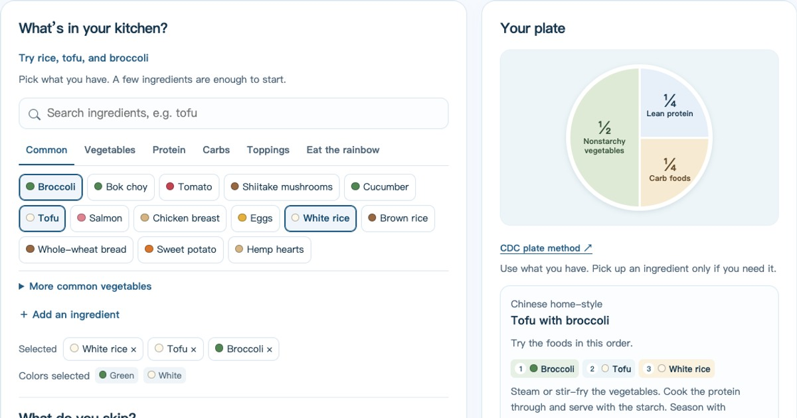

Binya Liu · Physician-scientist
What should I do next?
Sometimes that means knowing when to seek medical care. Sometimes it means figuring out how to eat a little healthier day to day.
I’m Binya. I build and evaluate tools that help people work through both kinds of decisions.
JoyBinya Meal Guide
Start with what you have.
I have rice, tofu, and broccoli. What can I make? Pick ingredients you already have and get meal ideas for adults managing prediabetes, with an option to consider LDL cholesterol.
Available in English, Simplified Chinese, and Cantonese.
Open the Meal Guide
Prediabetes AI Benchmark
When AI gives health advice, is the next step clear?
I designed a 100-case synthetic benchmark to evaluate screening, follow-up, and triage decisions. In one case, the model named warning signs but said “seek urgent care,” leaving the patient to decide whether that meant a walk-in clinic or an emergency department.
This independent evaluation studied patient-facing model responses. Its results apply to the benchmark cases.
Read the evaluationAbout Me
Why I work on these questions
I entered medical school at 17 and went on to care for patients in obstetrics, gynecology, and reproductive medicine. At UCSF, my research on endometriosis and adenomyosis brought together clinical information and molecular data.
Working with patients taught me to pay attention to both the details that change a recommendation and the practical decisions someone has to make at home.
7 years
Patient Care
Obstetrics, gynecology, and reproductive medicine
10+ years
Translational Research
Reproductive health and multiomics, including work at UCSF
3+ years
Medical Teaching
Patient communication informs how I assess model responses
Selected publications
Selected publications exploring reproductive health, multiomics, and emerging technologies in medicine.
Endometriosis and adenomyosis unveiled
through single-cell glasses
American Journal of Obstetrics & Gynecology
Get in touch
Open to opportunities and collaborations in clinical AI research, evaluation, safety, and health innovation.